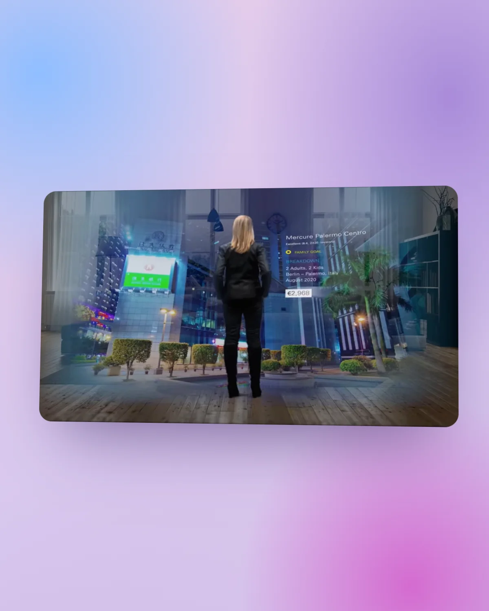

Case study · Earlier work
The foundations of my career
Art direction, product design and digital experiences across agencies, brands and platforms.
Art direction, design and illustration across digital campaigns, apps, video and social for leading agencies and brands, including The Guardian, Imagination, Razorfish, Isobar and Ogilvy. These earlier projects established the core foundations of my approach to design systems, platform scaling and cross-functional leadership, principles that directly shape my current work at global scale.